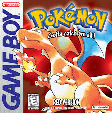
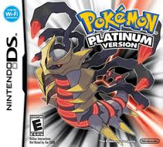

Site Map
Pokédex
Site Map
Pokédex
 Home
Home
 Contact
Contact

Pokémon Red Version
×
Pokémon Red VersionPokémon Red and Pokémon Blue are now available for systems in the Nintendo 3DS family! The games remain true to the originals, complete with monochromatic pixel art and 4-bit background music, so you can feel as though you’re experiencing the games just as they were back then! These titles are compatible with wireless communication for the first time ever. In the days of the Game Boy, players had to use a Link Cable to connect with friends, but these games use the Nintendo 3DS system’s wireless capabilities to allow you to trade and battle Pokémon in just the same way. Pokémon Bank is also now compatible with Pokémon Red and Pokémon Blue, allowing you to transfer the Pokémon you’ve caught to the upcoming Pokémon Sun and Pokémon Moon video games! Using Pokémon Bank, you'll be able to transfer Pokémon you've caught in the Nintendo 3DS Virtual Console versions of Pokémon Red, Pokémon Blue, and Pokémon Yellow into your copy of Pokémon Sun or Pokémon Moon. Pokémon from Pokémon Omega Ruby, Pokémon Alpha Sapphire, Pokémon X, and Pokémon Y can also be brought into Pokémon Sun and Pokémon Moon in the same way.. |
Pokémon Crystal Version
×
Pokémon Crystal VersionThe last of the Game Boy Color Pokémon games, Pokémon Crystal Version sent the classic system off in style. On the surface, Pokémon Crystal Version is a lot like Pokémon Gold Version and Pokémon Silver Version, in that the story takes place in Johto and the adventure takes you down a familiar path. But, digging deeper, you'll see that Pokémon Crystal has plenty of aspects that have revolutionized Pokémon games. Pokémon Crystal is the first Pokémon game where you can choose to play either as a boy or girl, and it's also the first Pokémon game to feature a Battle Tower, a central location for hordes of the toughest Trainers in the land! Pokémon Crystal features animated introductions for each Pokémon when they are brought to the heat of battle, as well as other graphic improvements you'll notice as you roam the Johto region. While doing so, keep an eye out for Pokémon in different locations and Legendary Pokémon that can be caught only by the most talented Trainers! |
Pokémon:Let's Go,Pikachu!Pokémon:Let's Go, Eevee!
×
Pokémon:Let's Go Pikachu & EeveeReturn to the Kanto region and experience a classic Pokémon journey in a whole new way with Pokémon: Let’s Go, Pikachu! and Pokémon: Let’s Go, Eevee! These two titles were created by GAME FREAK, the developers of the Pokémon core RPG titles. Pokémon: Let’s Go, Pikachu! and Pokémon: Let’s Go, Eevee! introduce a new play style that anyone can enjoy and combine it with the fun of collecting Pokémon. Pokémon: Let’s Go, Pikachu! and Pokémon: Let’s Go, Eevee! are based on Pokémon Yellow: Special Pikachu Edition, which first launched in Japan in 1998. These updated versions reimagine the original to make the most of the unique capabilities of the Nintendo Switch. The games also capture the fun of Pokémon GO and its intuitive Pokémon-catching mechanic. |
Pokémon Sword & Shield
×
Pokémon: Sword & ShieldReturn to the Kanto region and experience a classic Pokémon journey in a whole new way with Pokémon: Let’s Go, Pikachu! and Pokémon: Let’s Go, Eevee! These two titles were created by GAME FREAK, the developers of the Pokémon core RPG titles. Pokémon: Let’s Go, Pikachu! and Pokémon: Let’s Go, Eevee! introduce a new play style that anyone can enjoy and combine it with the fun of collecting Pokémon. Pokémon: Let’s Go, Pikachu! and Pokémon: Let’s Go, Eevee! are based on Pokémon Yellow: Special Pikachu Edition, which first launched in Japan in 1998. These updated versions reimagine the original to make the most of the unique capabilities of the Nintendo Switch. The games also capture the fun of Pokémon GO and its intuitive Pokémon-catching mechanic. |

Pokémon Platinum Version
×
Pokémon Platinum VersionAnother world has emerged in the Sinnoh region, a place where time and space have been completely altered. Explore the Distortion World, where challenges await at every turn! Visit other locations designed especially for the serious Trainer: A Battle Frontier will test your battle skills with its abundance of committed opponents, led by the Frontier Brains. Also check out the Wi-Fi Plaza, where up to 20 players can connect with a wireless broadband internet connection and participate in fun games and activities. While Dialga and Palkia shared the limelight in Pokémon Diamond Version and Pokémon Pearl Version, the Legendary Pokémon Giratina is at the center of the story in Pokémon Platinum Version. As you track down the elusive Giratina, watch out for Team Galactic—they're back, and with Cyrus leading, they're as dangerous as ever. Check out the expanded Global Trade Station, now known as the Global Terminal. Various upgrades include the ability to record your battles using the Vs. Recorder. Once the battles have been recorded, post them for the world to see how awesome your team really is! |
Pokémon GO
×
Pokémon GOTravel between the real world and the virtual world of Pokémon with Pokémon GO for iPhone and Android devices. With Pokémon GO, you'll discover Pokémon in a whole new world—your own! Pokémon GO gives you the chance to explore real locations and search far and wide for Pokémon. More and more Pokémon continue to appear around the globe, including rare and powerful Legendary Pokémon. As you move around the places where you live and visit, your smartphone can vibrate to let you know when you're near a Pokémon. Once you've encountered a Pokémon, take aim on your smartphone's touch screen and throw a Poké Ball to catch it—but be careful, or it might run away! Also look for PokéStops located at interesting places—such as public art installations, historical markers, and monuments—where you can collect more Poké Balls and other items. |